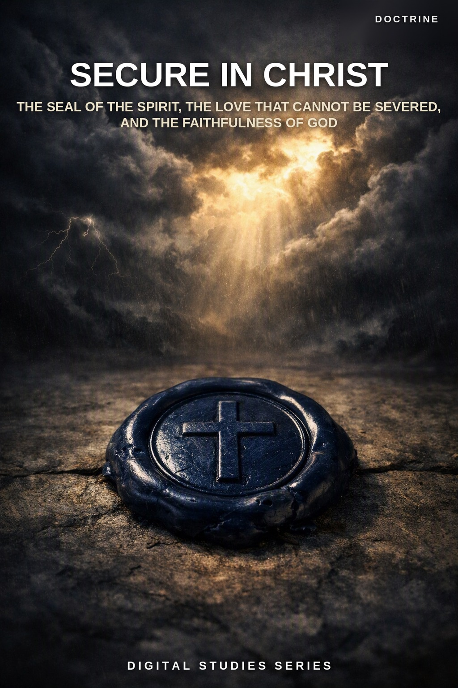
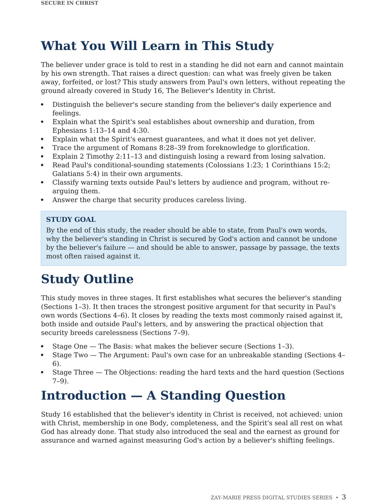
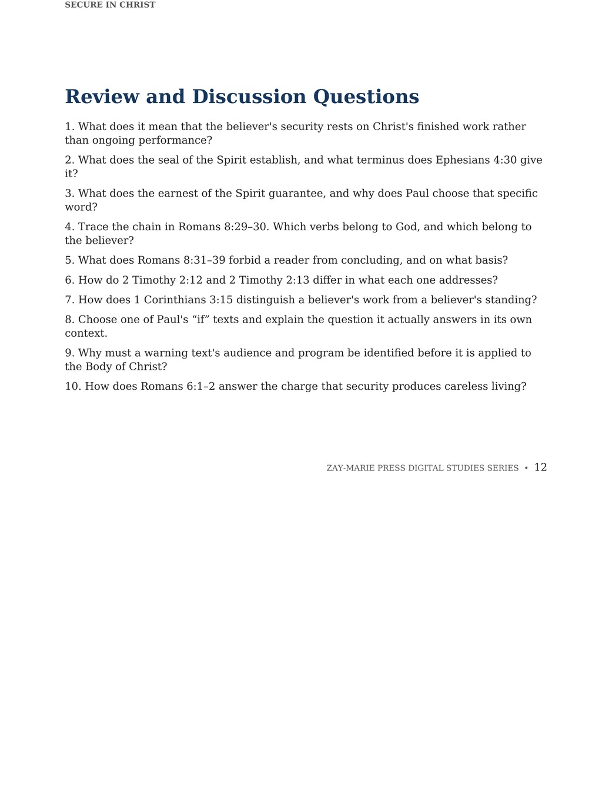
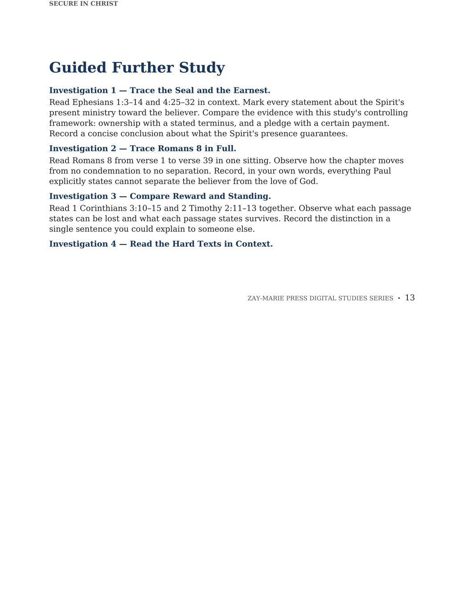

Secure in Christ
The Seal of the Spirit, the Love That Cannot Be Severed, and the Faithfulness of God
A Biblical Examination of the Believer’s Security in Christ Under the Mystery Revealed Through Paul
The believer under grace is told to rest in a standing he did not earn and cannot maintain by his own strength. That raises a direct question: can what was freely given be taken away, forfeited, or lost? Believers fail, doubt, and sometimes fall into open disobedience — and if the believer’s standing depended even partly on his own performance, no believer could ever be sure of it.
This study answers from Paul’s own letters: the seal and earnest of the Spirit, the unbroken chain of Romans 8:28–39, and God’s own faithfulness in 2 Timothy 2:11–13. It then reads the texts most often raised against that security, inside and outside Paul’s letters, and distinguishes a lost reward from a lost standing, so the two are never confused.
A Standing Secured by God, Not Maintained by the Believer
Paul’s letters answer the believer’s security question directly, in his own terms and for his own audience. The seal of the Spirit marks ownership and names its own terminus — “unto the day of redemption” — not the believer’s next failure. The earnest is God’s own pledge of a certain future payment. Romans 8:28–39 traces a chain in which every verb belongs to God and closes with a total, named list of what cannot separate the believer from His love.
This study is not a general study of the believer’s identity in Christ, which Study 16 surveys broadly, nor a re-argument of Hebrews 6:4–6, which Study 28 examines on its own terms, nor a full classification of biblical judgments, which Study 31 undertakes. It assumes each of those and asks a narrower question: once a standing is given in Christ, is that standing ever revocable?
How These Studies Relate
Study 46 traces the ground, the argument, and the objections concerning the believer’s secure standing in Christ under grace.
Study 16 — The Believer's Identity in Christ Start with the believer’s settled identity in Christ, including the seal and the earnest introduced there as ground for assurance; Study 46 asks the narrower question that study leaves open, whether that standing can be lost.
Study 28 — The Warning of Hebrews 6:4–6 Read the full exposition of this frequently raised warning text within its own Hebrew, covenant audience; Study 46 relies on that exposition rather than re-arguing it.
Study 31 — The Judgments of Scripture Use the broader classification of biblical judgments to keep a lost reward distinct from a lost standing, the same distinction Study 46 draws from 1 Corinthians 3:11–15 and 2 Timothy 2:12.
Trace the Ground, the Argument, and the Objections
Christ’s Work, Not the Believer’s Record
See why the believer’s acceptance rests on Ephesians 1:6, not on ongoing performance.
Sealed Unto the Day of Redemption
Read Ephesians 1:13–14 and 4:30’s stated terminus for the Spirit’s seal of ownership.
The Earnest of the Spirit
See why an earnest is a pledge, not a hope, and what it obligates God to deliver.
An Unbroken Chain
Trace Romans 8:28–39’s chain of God’s own verbs, and its list of what cannot separate.
Kept by His Faithfulness
Read 2 Timothy 2:11–13’s distinction between a denied reward and God’s own unchanging character.
Reward Lost, Standing Kept
Follow 1 Corinthians 3:11–15’s tested work, and Paul’s verdict on the worker himself.
Examine the Passages for Yourself
Ephesians 1:13–14
Sealed with the Spirit of promise, given as the earnest of the inheritance.
Ephesians 4:30
Sealed “unto the day of redemption” — the seal’s own stated terminus.
Romans 8:29–30
Foreknown, predestinated, called, justified, glorified — a chain of God’s own verbs.
Romans 8:31–39
An exhaustive, named list of what cannot separate the believer from God’s love.
2 Timothy 2:11–13
“He abideth faithful: he cannot deny himself” — the guarantee is God’s own character.
1 Corinthians 3:11–15
Work tested by fire; the worker himself is stated to be saved.
Galatians 5:1–6
“Fallen from grace” read within its own argument about law-keeping, not lost standing.
Hebrews 6:4–6
A covenant-audience warning, examined fully in Study 28, not transferred to the Body.
A Chain With No Human Link
Foreknew, predestinated, called, justified, glorified — every verb in that chain belongs to God.
A chain with no human link cannot be broken by human failure. Romans 8:29–30 traces the believer’s security from foreknowledge to glory in a single, unbroken sequence, and every verb in it is something God does, not something the believer maintains.
Preview the Study Before You Purchase
Click any page to enlarge it for reading.
{kind=link}

What You Will Learn
See the study’s goal, outline, and the question it sets out to answer.
{kind=link}

Review and Discussion Questions
See the kind of questions this study asks readers to work through for themselves.
{kind=link}

Guided Further Study
See the directed investigations this study sends readers back to Scripture to complete.
A Focused Study Built for
Understanding and Teaching
14-Page In-Depth Biblical Study
A careful study of the believer’s secure standing in Christ, grounded in Paul’s own letters.
9 Core Teaching Sections
Progress from the ground of security through Paul’s strongest argument to the hardest objection texts.
Two Comparison Tables
See the seal’s own terms at a glance, and weigh each objection text by its audience and program.
10 Review Questions
Test the study’s distinctions concerning standing, reward, and the texts raised against security.
Teaching Outline
A structured framework for teaching the believer’s security with precision.
Guided Further Study
Return to the seal, the chain of Romans 8, and the objection texts, with directed questions.
Scripture-Tracing Exercise
Trace the study’s key passages across Ephesians, Romans, Timothy, and Corinthians in their own context.
Final Synthesis Exercise
Bring the evidence together in one coherent, Scripture-based explanation.
Secure in Christ
15-page digital PDF · For personal use
Want More Than a Focused Study?
Digital Studies examine particular biblical subjects and difficult passages. The 40-lesson Biblical Hermeneutics course teaches a complete, repeatable method for establishing meaning in context, determining proper assignment, and making responsible application.